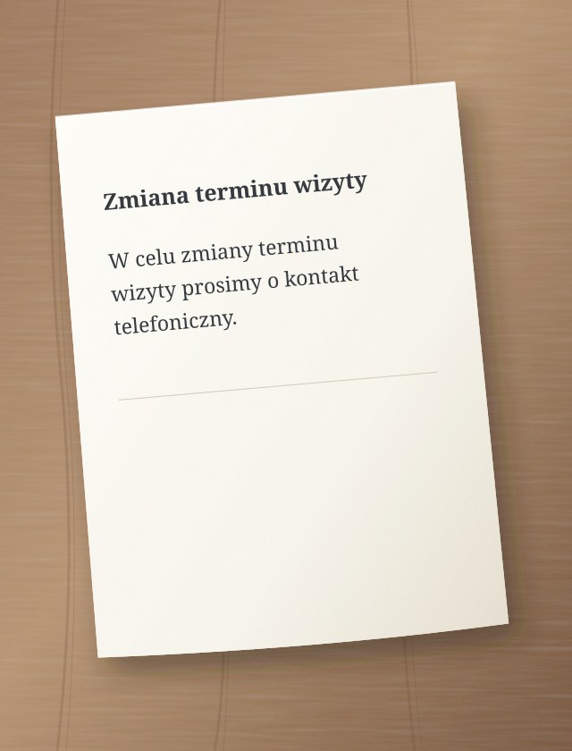
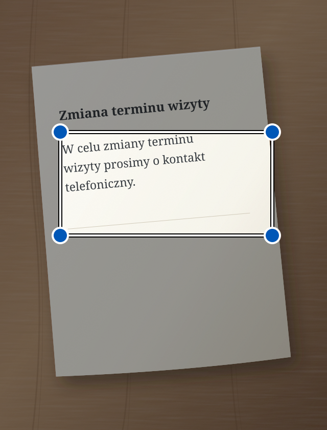

Pismo z urzędu, długa wiadomość, skomplikowana instrukcja. Sedno pomaga zrozumieć je prostszym językiem. Może też poprawić błędy w Twoim tekście i przeczytać go na głos.
W celu zmiany terminu wizyty prosimy o kontakt telefoniczny.
↳ Uproszczony tekst
Chcesz zmienić termin wizyty? Zadzwoń.
Przykład poglądowy uproszczenia tekstu.
Łatwiej zrozumieć. Łatwiej działać.
Prosty język jest dla każdego.
Tworzymy Sedno przede wszystkim z myślą o osobach słabosłyszących i osobach, którym trudno zrozumieć złożony tekst. Prostsze słowa mogą pomóc każdemu z nas.
Od tekstu do sedna
Dwa proste kroki.
01
Dodaj tekst
Wpisz go, wklej, zrób zdjęcie lub powiedz na głos.
02
Uprość lub popraw
Wybierz, czego potrzebujesz. Wynik pojawi się w tym samym polu. Możesz go dalej zmieniać.
i AI może się pomylić. Ważne informacje sprawdź w oryginale.
Zobacz, co nacisnąć
Sedno krok po kroku.
Każdy przykład pokazuje jedną czynność. Kółko wskazuje, co nacisnąć. Strzałka pokazuje, co dzieje się dalej.
To uproszczone rysunki ekranów. Teksty są przykładowe. W aplikacji wygląd może się nieco różnić.
Uprość tekst pisany
Masz trudną wiadomość? Wpisz ją lub wklej do Sedna.
1 Wpisz tekst i naciśnij „Uprość”.
Na ekranie powinien być wybrany tryb Uprość.
Sedno – uprość tekst:
W celu zmiany terminu wizyty prosimy o kontakt telefoniczny.
Uprość
2 Przeczytaj prostszy tekst.
Wynik pojawi się w tym samym polu. Możesz go zmienić.
Uproszczony tekst
Chcesz zmienić termin wizyty? Zadzwoń.
AI może się mylić
Uprość
Uprość tekst ze zdjęcia
Masz pismo na papierze? Zrób zdjęcie w Sednie.
1 Naciśnij aparat.
Otworzysz aparat w aplikacji.
Sedno – uprość tekst:
Wpisz lub wklej tekst
Uprość
2 Naciśnij „Zrób zdjęcie”.
Ustaw telefon tak, żeby cała kartka i tekst były wyraźne.
Zrób zdjęcie tekstu

Zrób zdjęcie
3 Zaznacz tekst i naciśnij „Uprość”.
Przesuń rogi ramki na fragment, który chcesz uprościć.
Zaznacz tekst
Przesuń rogi ramki, aby zaznaczyć tekst.

Uprość
4 Przeczytaj prostszy tekst.
Sedno odczyta tekst ze zdjęcia i go uprości.
Uproszczony tekst
Chcesz zmienić termin wizyty? Zadzwoń.
AI może się mylić
Uprość
Zdjęcie zostaje na telefonie. Do AI trafia odczytany tekst. Jeśli uproszczenie się nie uda, odczytany tekst pozostanie w polu. Możesz go wtedy poprawić.
Uprość mowę
Chcesz powiedzieć tekst zamiast go pisać? Wybierz tryb Uprość.
1 Naciśnij mikrofon.
Jeśli telefon zapyta o dostęp do mikrofonu, zezwól na niego.
Sedno – uprość tekst:
Wpisz lub wklej tekst
Uprość
2 Powiedz tekst na głos.
Mów w wybranym języku. Na koniec zrób krótką przerwę.
Mów w wybranym języku
Sedno zamienia mowę na tekst.
3 Przeczytaj prostszy tekst.
Po 1,5 sekundy ciszy Sedno samo uprości rozpoznany tekst.
Uproszczony tekst
Chcesz zmienić termin wizyty? Zadzwoń.
AI może się mylić
Uprość
Mowa jest rozpoznawana na telefonie. Potrzebujesz Androida 13 lub nowszego, obsługi tej funkcji i pobranego modelu wybranego języka. Nagrywanie trwa najwyżej minutę. Stop anuluje nagrywanie.
Popraw tekst pisany
Chcesz poprawić błędy w swojej wiadomości? Wybierz tryb Popraw przed wpisaniem tekstu.
1 Wpisz tekst i naciśnij „Popraw”.
Tryb zmienisz przyciskiem ze strzałkami nad dużym przyciskiem.
Sedno – popraw tekst:
jutro niemoge przyjsc na spotkanie
Popraw
2 Przeczytaj poprawiony tekst.
Sedno poprawi błędy. Sprawdź, czy tekst mówi to, co chcesz.
Poprawiony tekst
Jutro nie mogę przyjść na spotkanie.
AI może się mylić
Popraw
Posłuchaj poprawionego tekstu
W trybie Popraw telefon może przeczytać tekst z pola na głos.
1 Naciśnij głośnik.
Najpierw popraw tekst. Potem naciśnij głośnik po lewej stronie.
Poprawiony tekst
Jutro nie mogę przyjść na spotkanie.
AI może się mylić
Popraw
2 Posłuchaj tekstu.
Telefon czyta na głos. Przycisk stop zatrzymuje czytanie.
Telefon czyta na głos
Słuchasz tekstu ze swojego telefonu.
Odczyt działa lokalnie. Potrzebujesz głosu wybranego języka pobranego do odczytu bez internetu w ustawieniach telefonu.
Język
Wybierz swój język.
Sedno obsługuje 13 wariantów językowych. W aplikacji otwórz menu i wybierz Język. Wybór dotyczy też tekstu, dyktowania i odczytu. Sedno upraszcza i poprawia; nie tłumaczy między językami.
Twoje teksty. Twoja kontrola.
Prywatność od początku.
Zdjęcia i dźwięk zostają na telefonie. Do AI trafia tylko tekst.